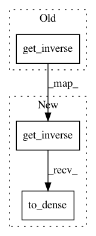

6315ffd32fba290b52861102fecab3fdb4a8e0d1,kfac/python/kernel_tests/fisher_factors_test.py,InverseProvidingFactorTest,testRegisterDampedInverse,#InverseProvidingFactorTest#,227
Before Change
factor.instantiate_inv_variables()
inv = factor.get_inverse(damping_funcs[0])
self.assertEqual(inv, factor.get_inverse(damping_funcs[1]))
self.assertNotEqual(inv, factor.get_inverse(damping_funcs[2]))
self.assertEqual(factor.get_inverse(damping_funcs[2]),
factor.get_inverse(damping_funcs[3]))
After Change
factor.instantiate_inv_variables()
inv = factor.get_inverse(damping_funcs[0]).to_dense()
self.assertEqual(inv, factor.get_inverse(damping_funcs[1]).to_dense())
self.assertNotEqual(inv, factor.get_inverse(damping_funcs[2]).to_dense())
self.assertEqual(factor.get_inverse(damping_funcs[2]).to_dense(),
factor.get_inverse(damping_funcs[3]).to_dense())
In pattern: SUPERPATTERN
Frequency: 3
Non-data size: 3
Instances
Project Name: tensorflow/kfac
Commit Name: 6315ffd32fba290b52861102fecab3fdb4a8e0d1
Time: 2019-02-01
Author: tvikram@google.com
File Name: kfac/python/kernel_tests/fisher_factors_test.py
Class Name: InverseProvidingFactorTest
Method Name: testRegisterDampedInverse
Project Name: tensorflow/kfac
Commit Name: 6315ffd32fba290b52861102fecab3fdb4a8e0d1
Time: 2019-02-01
Author: tvikram@google.com
File Name: kfac/python/kernel_tests/fisher_factors_test.py
Class Name: InverseProvidingFactorTest
Method Name: testMakeInverseUpdateOpsManyInversesEigenDecomp
Project Name: tensorflow/kfac
Commit Name: 6315ffd32fba290b52861102fecab3fdb4a8e0d1
Time: 2019-02-01
Author: tvikram@google.com
File Name: kfac/python/kernel_tests/fisher_factors_test.py
Class Name: InverseProvidingFactorTest
Method Name: testMakeInverseUpdateOpsNoEigenDecomp